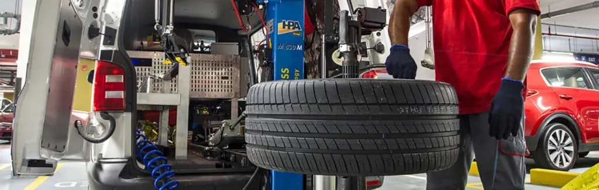

Go Back To Home Page
Here is the Process
Take your punctured tyre for repair: Visit a garage or tyre fitters at the first opportunity and give them your punctured wheel. They will advise whether to repair or replace it. Don’t drive on a space-saver spare wheel for longer than is strictly necessary – they are only intended for emergencies.
